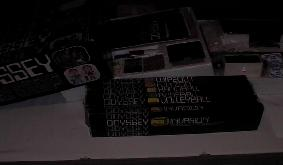
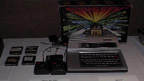
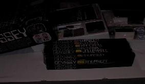
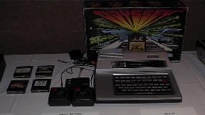
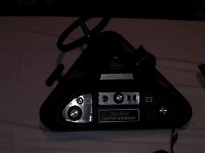
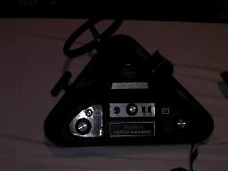

In honor of CGE2002, I've put together a short video montage of footage from CGE2001. Thanks to 8 Bit Weapon and Seth Sternberger for the M.U.L.E. remix.
Windows Media hi-res (16 MB)
Windows Media medium-res (3.8MB)
Windows Media lo res (1.8MB)
Mail me at the address below if you want a higher quality version.
Back in the Fall of 1999 my friend Chris turned me on to MAME. Naturally this re-kindled my interest in classic games and now I read rec.games.video.classic every day. It was in rgvc that I heard of the magical event that is the Classic Gaming Expo. I decided to use my tax refund to prop up the Las Vegas economy and bought a ticket to the show. Here's my account of my first time at CGE!
After purchasing my nicely laminated ticket, I entered the hall. It was quite a moment for me. The room opened up into a vast array of free play games set up on the perimiter, and vendors set up in the middle, with the very nifty analog sounds of Seth Sternberger's 8 bit weapon. I toured the vendor hall until the first keynote speech. I really wish the show organizers had been more up front with the keynote schedule. The room where the keynotes were to be held wasn't signed very well, but no matter, it was easy to figure out.
For me, the main attraction was the keynote speakers. The work these people did back in the day got me started into computers. I remember being a kid, playing the games, and wondering what the people that made these games were like. Getting to meet some of the top programmers was a realization of a childhood dream.
The first session was given by Steve Woita, Rob Fulop, Bob Polaro and John Seghers. You can read the bios on the cge web page. I'll just give some notable data. I was amazed at how young these guys looked, especially Steve Woita. Rob Fulop's current venture is called pfmagic. It turns out the background star field in his game, Demon Attack, was discovered by accident while he was programming the game. He put a comment in the code "Pure Fucking Magic". Hence the name of his new venture. Rob mentioned and the other panelists concurred, that much of the quality in the old games was due to exploiting bugs and other oddities in the 2600 hardware. I chatted with Rob after the panel and together we lamented the shift in game design from re-playable to consumable games. Rob offered that one reason for this shift is that the original home games were heavily inspired by coin-ops, which had a business model based on re-playability, whereas today's business model is based on causing the consumer to want to buy more games, rather than re-playing the same one again and again. Another interesting tidbit is that the voice saying Quadrun in the game Quadrun is Steve Woita's. The panelists all agreed that classic game emulators were generally preferable to the games never being playable again.
The next panel was the arcade programmers. Jamie Fenton's talk was really interesting. I appreciated her use of video and slides in talking about the development of the game Ms. Gorf. The game never shipped, but it had some nifty hardware design for its time. It used two Z80 processors, with clearly delineated responsibilites for each. I wish I remembered what each was used for. She said the idea was born from the observation that one particular aspect of running the game ended up taking up a large chunk of the CPU cycles, so why not farm off that aspect to another CPU? She showed video of the game in development, which was narrated by her twin brother Jay Fenton. Franz Lanzinger mentioned how important it was to be an ace player of arcade games, as well as designing them. Later on, the Activision guys also emphasized the hyper competitive nature of their lot when it came to playing the games. Susan McBride spoke about how graphic design people came to be involved in game creation. She mentioned some of the early tools used to create the graphics, but spoke fondly of the day when they did the graphics coding by hand. Susan was very friendly and I saw her hanging out for the rest of the conference.
Following the arcade programmers, I went out to the vendor area, played a little circus, and cruised the vendors. I wasn't too happy with the prices I saw. This being by first classic gaming show, I wasn't sure what kind of prices to expect, so I was expecting optimistically. I was lookinf for some 2600, driving controllers but no-one had any. I bought some after the show from http://www.atari2600.com/, however. I love Carla Meninsky's Indy 500. At this point, I took the time to play a little warlords on the Dreamcast at the Infogrames booth. Their Atari Anniversary Edition had the arcade Warlords, which I had never played before. It was fun to play four players with other conference attendees.


 





 
